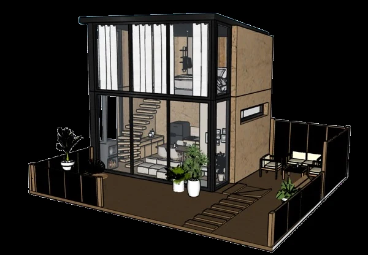
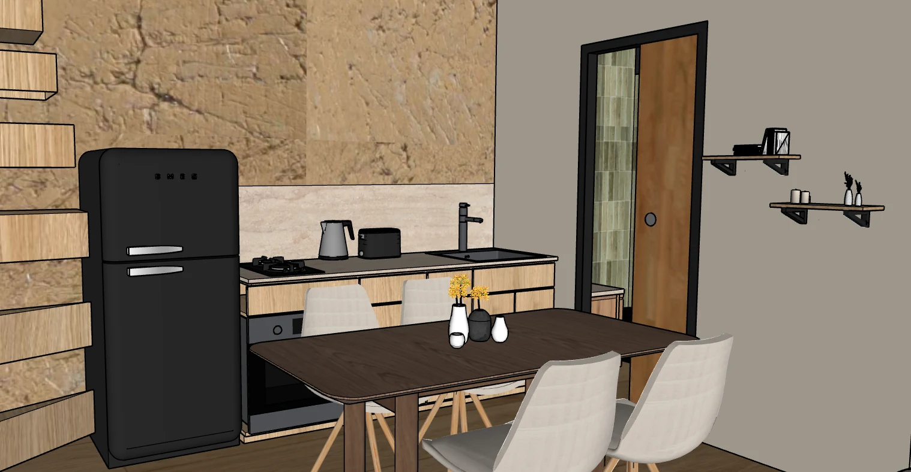
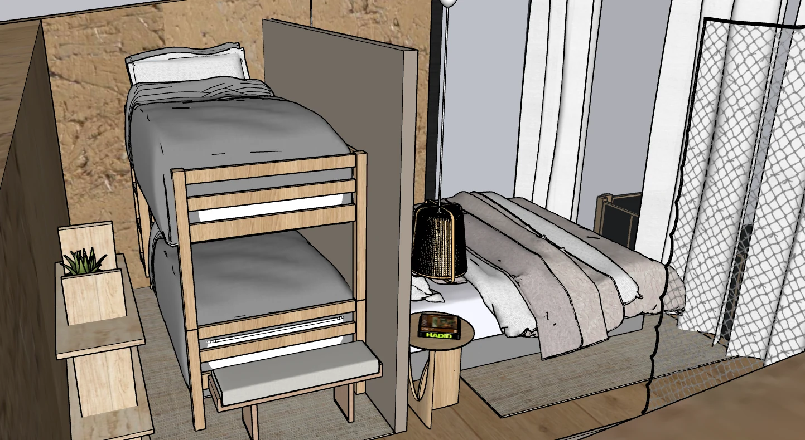
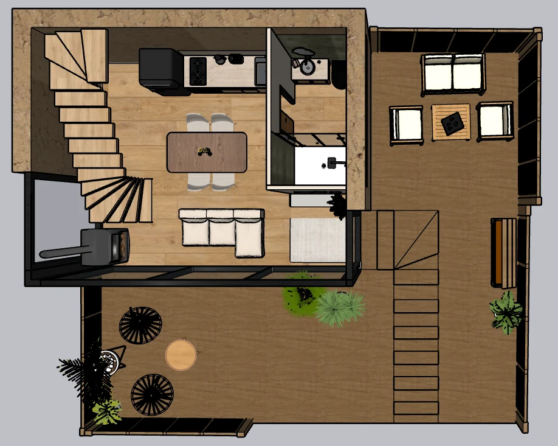
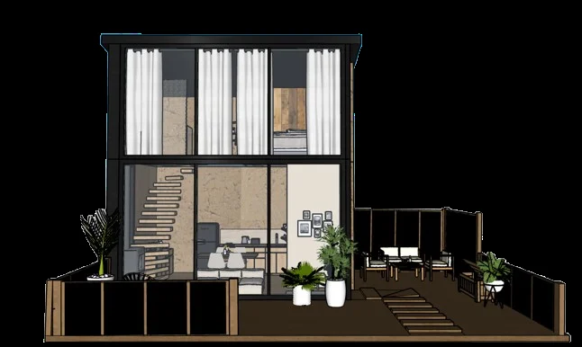
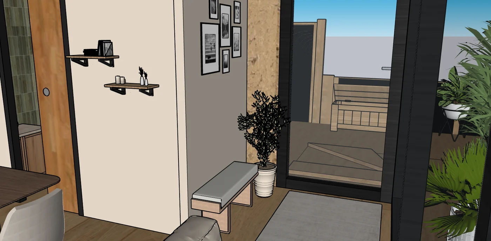
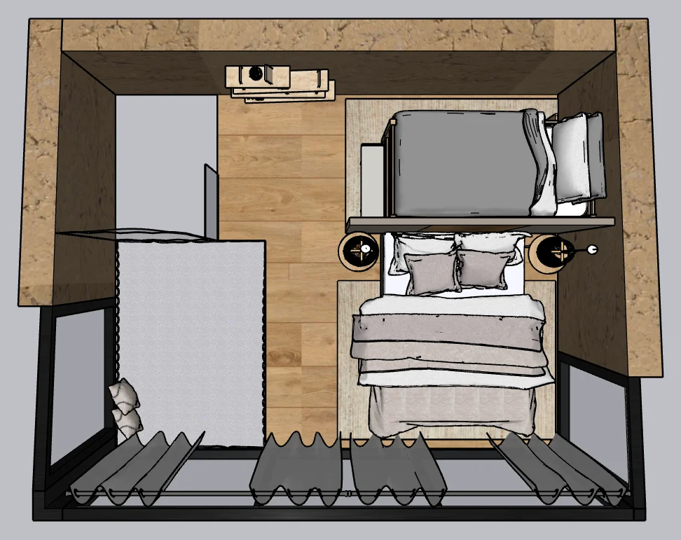

01
Cabane
Habiter le paysage · Architecture intérieure
Cabane
dans les bois
L’intention était de concevoir un espace qui ne cherche pas à s’imposer dans son environnement, mais à en prolonger l’atmosphère. Une manière d’habiter le paysage : ralentir, observer et laisser la nature participer à l’espace.
Matière bruteImmersionDouble hauteur